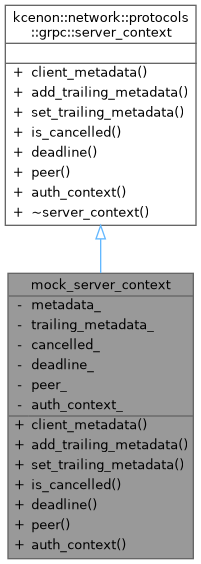
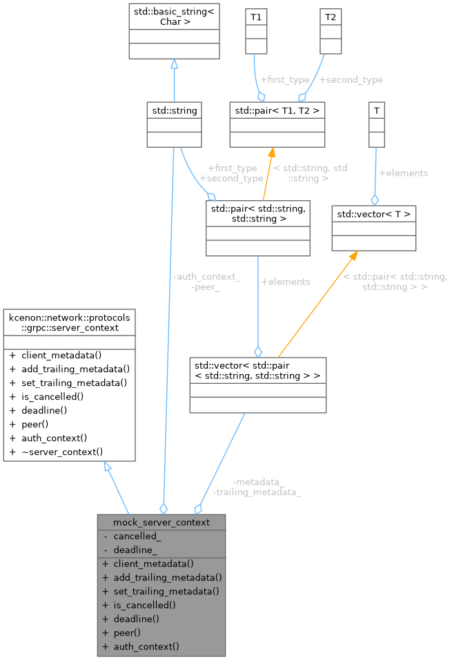

Simple mock implementation of server_context for testing/examples. More...


Public Member Functions | |
| auto | client_metadata () const -> const grpc::grpc_metadata &override |
| Get client metadata. | |
| auto | add_trailing_metadata (const std::string &key, const std::string &value) -> void override |
| Add trailing metadata. | |
| auto | set_trailing_metadata (grpc::grpc_metadata metadata) -> void override |
| Set trailing metadata. | |
| auto | is_cancelled () const -> bool override |
| Check if the request has been cancelled. | |
| auto | deadline () const -> std::optional< std::chrono::system_clock::time_point > override |
| Get request deadline. | |
| auto | peer () const -> std::string override |
| Get peer address. | |
| auto | auth_context () const -> std::string override |
| Get authentication context (for TLS) | |
 Public Member Functions inherited from kcenon::network::protocols::grpc::server_context Public Member Functions inherited from kcenon::network::protocols::grpc::server_context | |
| virtual | ~server_context ()=default |
Private Attributes | |
| grpc::grpc_metadata | metadata_ |
| grpc::grpc_metadata | trailing_metadata_ |
| bool | cancelled_ = false |
| std::optional< std::chrono::system_clock::time_point > | deadline_ |
| std::string | peer_ = "127.0.0.1:12345" |
| std::string | auth_context_ |
Detailed Description
Simple mock implementation of server_context for testing/examples.
In production, this would be provided by the gRPC server infrastructure.
Definition at line 36 of file grpc_service_example.cpp.
Member Function Documentation
◆ add_trailing_metadata()
|
inlineoverridevirtual |
Add trailing metadata.
- Parameters
-
key Metadata key value Metadata value
Implements kcenon::network::protocols::grpc::server_context.
Definition at line 44 of file grpc_service_example.cpp.
References trailing_metadata_.
◆ auth_context()
|
inlineoverridevirtual |
Get authentication context (for TLS)
- Returns
- Authentication context string (e.g., client certificate CN)
Implements kcenon::network::protocols::grpc::server_context.
Definition at line 71 of file grpc_service_example.cpp.
References auth_context_.
◆ client_metadata()
|
inlineoverridevirtual |
Get client metadata.
- Returns
- Reference to client metadata
Implements kcenon::network::protocols::grpc::server_context.
Definition at line 39 of file grpc_service_example.cpp.
References metadata_.
◆ deadline()
|
inlineoverridevirtual |
Get request deadline.
- Returns
- Deadline if set
Implements kcenon::network::protocols::grpc::server_context.
Definition at line 60 of file grpc_service_example.cpp.
References deadline_.
◆ is_cancelled()
|
inlineoverridevirtual |
Check if the request has been cancelled.
- Returns
- True if cancelled
Implements kcenon::network::protocols::grpc::server_context.
Definition at line 55 of file grpc_service_example.cpp.
References cancelled_.
◆ peer()
|
inlineoverridevirtual |
Get peer address.
- Returns
- Peer address string
Implements kcenon::network::protocols::grpc::server_context.
Definition at line 66 of file grpc_service_example.cpp.
References peer_.
◆ set_trailing_metadata()
|
inlineoverridevirtual |
Set trailing metadata.
- Parameters
-
metadata Trailing metadata
Implements kcenon::network::protocols::grpc::server_context.
Definition at line 50 of file grpc_service_example.cpp.
References trailing_metadata_.
Member Data Documentation
◆ auth_context_
|
private |
Definition at line 82 of file grpc_service_example.cpp.
Referenced by auth_context().
◆ cancelled_
|
private |
Definition at line 79 of file grpc_service_example.cpp.
Referenced by is_cancelled().
◆ deadline_
|
private |
Definition at line 80 of file grpc_service_example.cpp.
Referenced by deadline().
◆ metadata_
|
private |
Definition at line 77 of file grpc_service_example.cpp.
Referenced by client_metadata().
◆ peer_
|
private |
Definition at line 81 of file grpc_service_example.cpp.
Referenced by peer().
◆ trailing_metadata_
|
private |
Definition at line 78 of file grpc_service_example.cpp.
Referenced by add_trailing_metadata(), and set_trailing_metadata().
The documentation for this class was generated from the following file:
- examples/tutorials/grpc_service_example.cpp